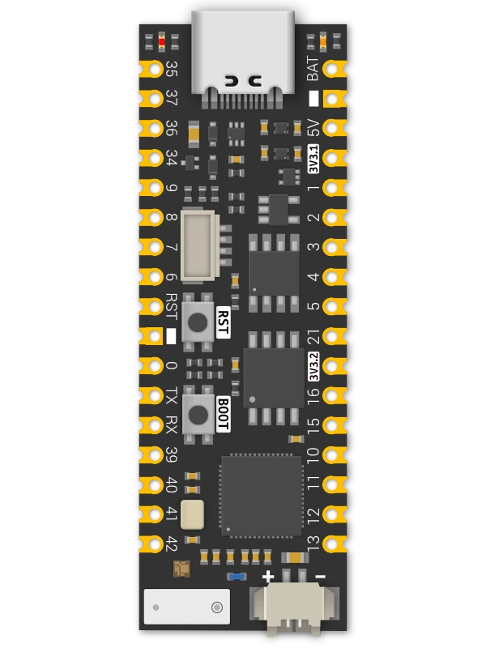

pinout and GPIO wiring
Unexpected Maker ProS3
An ESP32-S3 development board with 16 MB flash, 8 MB PSRAM and 27 GPIOs, ready for the ESP32 Bit Pirate toolkit. Native USB, STEMMA QT and onboard battery charging make it a flexible base for protocol exploration, USB adapters, radio tools and hardware experiments.

wiring references
ProS3 pinout and board photos
Four references for the original ProS3: GPIO mapping, front components, rear labels and onboard power. Open an image for its full-size view.
compatibility
ProS3 board overview
The original ProS3 combines accessible castellated headers with native USB and onboard power management in a 53 × 17.8 mm format.
practical tasks
ProS3 supported workflows
Access the same range of ESP32 Bit Pirate workflows as other ESP32-S3 boards. These examples are starting points: explore the full protocol catalog, browser tools and recipes, then add the modules your task needs.
Work with serial buses, memory chips, sensors and target devices. Choose the mode and GPIO mapping that match your setup.
Turn the board into a dedicated USB adapter, capture signals, program devices or automate experiments from compatible tools.
Measure and generate signals, inspect GPIO activity and connect external modules for additional interfaces and peripherals.
Explore Wi-Fi, BLE and ESP SDR with the onboard radio, and extend the available radio workflows with supported external modules.
flash and connect
Install the ProS3 firmware
Use the dedicated um_pros3 profile from the project’s pioarduino branch. The Web Flasher does not currently offer a ProS3 preset.
Connect a USB data cable. Hold BOOT, press and release RESET, then release BOOT.
Open the firmware project in PlatformIO, select um_pros3 and upload. From the project folder, use pio run -e um_pros3 -t upload.
Press RESET after uploading, then open Web Serial Terminal. Select the board’s USB port and follow the terminal prompts.
Close other serial sessions before uploading. If the USB port changes after reset, select it again in the terminal.
Pin mapping and wiring notes
The STEMMA QT connector shares SDA GPIO8 and SCL GPIO9 with the headers and is powered by the primary 3.3 V regulator. Check the selected mode’s pins before attaching a target.
Reserve GPIO19/20 for native USB. Onboard functions use GPIO17 for LDO2 enable, GPIO18 for the RGB LED, GPIO10 for battery sensing and GPIO33 for USB power sensing. BOOT uses GPIO0; GPIO0 and GPIO3 are strapping pins.
The 3V3.2 pin is the switched LDO2 output. The ProS3 firmware enables this rail at startup; it also supplies the RGB LED. Check the battery connector polarity against the board labels before connecting a single-cell LiPo.
GPIO logic is 3.3 V. The 5V power pin and USB ESD protection do not make the signal pins 5 V tolerant. Share ground with the target and use level shifting when needed.
useful pages
Protocols, tools and ProS3 references
Choose a practical task or check the manufacturer’s pinout and schematic for your setup.
Explore Bit Pirate
Connect and configure
Board references
board-specific answers
ProS3 FAQ
Firmware, STEMMA QT, power rails and native USB setup.
Which Bit Pirate firmware profile should I use?
Use the dedicated um_pros3 profile in the pioarduino source branch. It configures the ProS3 pins and enables LDO2. The Web Flasher currently has no ProS3 preset.
Does this guide also cover ProS3[D]?
This page covers the original ProS3 and its 16 MB flash / 8 MB PSRAM configuration. ProS3[D] has different battery monitoring and antenna hardware; consult its own documentation and firmware support.
Which pins does STEMMA QT use?
SDA is GPIO8 and SCL is GPIO9. The connector shares these signals with the side headers and receives power from LDO1.
Why is there a second 3.3 V output?
The 3V3.2 pin is the switched LDO2 output, controlled by GPIO17. It also supplies the onboard RGB LED. The Bit Pirate ProS3 profile enables LDO2 at startup.
How do I enter download mode?
With USB connected, hold BOOT, press and release RESET, then release BOOT. Press RESET again after uploading to start the firmware.
Can I use 5 V signals on the GPIO pins?
No. GPIO signals use 3.3 V logic. The 5V power pin and onboard USB protection do not provide GPIO level shifting.

source project
ProS3 in ESP32 Bit Pirate
A flexible base for ESP32 Bit Pirate’s protocol modes, USB adapters, browser tools and hardware experiments. Use the exposed GPIOs and connectors to build the setup your task needs.